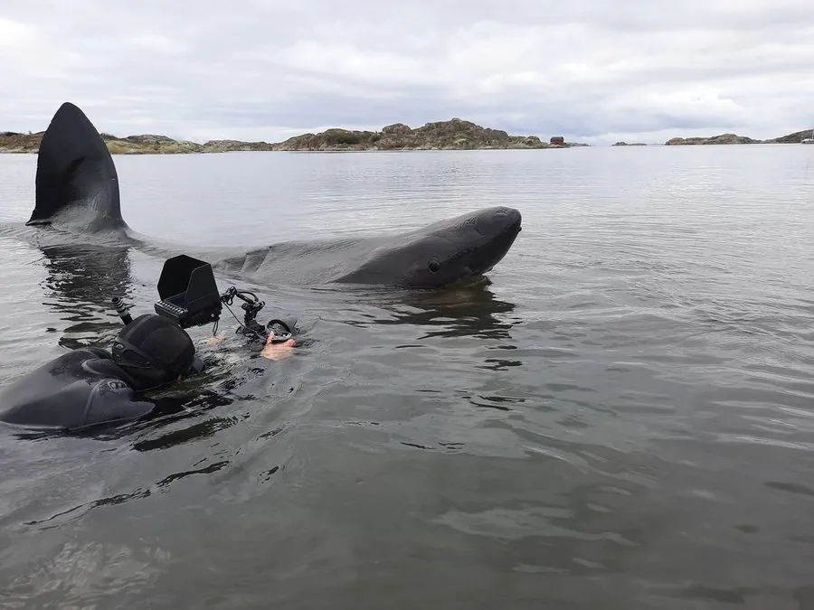

鱼类 · 动物界
姥鲨 Cetorhinus maximus

现存第二大的鱼类，体长可达 10 m 以上，靠游动时张开大口滤食浮游生物，性情温和，常在海面缓慢巡游晒太阳。
- 分类
- 门脊索动物门纲软骨鱼纲目鼠鲨目科姥鲨科属姥鲨属
- 栖息环境
- 温带和寒温带的表层海域，常在海面缓慢巡游，有季节性洄游
- 地理分布
- 全球温带和寒温带海域，包括大西洋、太平洋和南大洋，中国沿海偶有记录
- 保护级别
- IUCN 濒危（EN）；中国国家二级保护动物
物种志
姥鲨体型庞大，体长一般 6–8 m，最大记录可超过 12 m，是仅次于鲸鲨的第二大鱼类。它体呈纺锤形，吻部尖，鳃裂极长，从头顶一直延伸到喉部附近，鳃耙细密如筛；背鳍高大，体色灰褐或黑灰，皮肤粗糙。
姥鲨分布于全球温带和寒温带的表层海域，包括大西洋、太平洋和南大洋。它是滤食性鱼类，游动时张开大口，靠细密的鳃耙过滤浮游甲壳类、小鱼和鱼卵，一条姥鲨每天要过滤大量海水。姥鲨性情温和，常在海面缓慢巡游，背鳍露出水面，像是在晒太阳，因此得名。它通常单独或成小群活动，有季节性洄游行为。繁殖为卵胎生，妊娠期可能长达数年，每胎数量不多。由于鱼翅、鱼肝油贸易和渔业兼捕，姥鲨种群数量下降，IUCN 将其评为濒危，中国于 2021 年将其列为国家二级保护动物。
形态与习性
- 食性滤食浮游甲壳类、小鱼和鱼卵，靠细密鳃耙过滤海水
- 体长一般 6–8 m，最大记录超过 12 m
- 体重大型个体可达 5 t 以上
- 繁殖卵胎生，妊娠期可能长达数年，每胎数量少
- 习性性情温和，常在海面缓慢巡游，背鳍露出水面
- 鳃裂鳃裂极长，从头顶延伸到喉部附近，鳃耙细密如筛
趣味知识
- 姥鲨是现存第二大的鱼类，仅次于鲸鲨。
- 它的鳃裂特别长，从头顶一直延伸到喉部附近，靠鳃耙滤食浮游生物。
- 姥鲨性情温和，常在海面缓慢巡游，背鳍露出水面像在晒太阳。